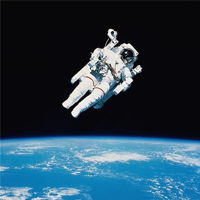

Тіло людини в гравітаційному полі землі. Перевантаження

Вага тіла. Невагомість. Перевантаження
Покладіть на долоню яблуко. Ви відчуєте, що яблуко тисне на долоню з певною силою, спрямованою вниз. Як ми вже знаємо, ця сила обумовлена притяганням яблука до Землі.
Отже, всі тіла внаслідок притягання до Землі або тиснуть на опору, або розтягують підвіс. Для характеристики такої дії у фізиці вводять фізичну величину – вагу тіла.
Силу, з якою тіло внаслідок притягання його Землею тисне на опору або розтягує підвіс, називають вагою тіла.
Необхідно звернути увагу, на те, що сила тяжіння визначається як сила, з якою тіло притягується до Землі, а вага – як сила, з якою тіло під дією сили тяжіння діє на опору або розтягує підвіс. Ці сили діють на різні тіла: сила тяжіння – на саме тіло, а вага – на підставку або підвіс. Якщо тіло нерухоме або рухається рівномірно, то сила тяжіння й вага різні за модулем. Вагу тіла позначають буквою P. Розрахунки показують, що вага тіла у стані спокою дорівнює силі тяжіння, що діє на це тіло: P = mg.
Якщо на столі нерухомо лежить книга масою 500 г, то на цю книгу діє сила тяжіння 5 Н, але й вага цієї книги також дорівнює 5 Н. Однак це не означає, що вага й сила тяжіння – та сама сила. Ці сили істотно відрізняються одна від одної. По-перше, ці сили прикладені до різних тіл: сила тяжіння прикладена до тіла, а вага – до опори або підвісу. По-друге, ці сили мають різну фізичну природу: сила тяжіння – це прояв сил всесвітнього тяжіння, що діють на відстані, а вага – зазвичай сила пружності, що діє при безпосередньому контакті. І, нарешті, сила тяжіння діє на тіло, що перебуває поблизу Землі, завжди, а вага тіла може при цьому дорівнювати нулю.
Стан, за якого вага тіла дорівнює нулю, називають невагомістю. Характерною властивістю стану невагомості є відсутність «внутрішніх напружень» у тілі, наприклад відсутність тиску одних органів на інші в тілі людини.
Для людини невагомість, як правило, супроводжується розладом вестибулярного апарату, нервовими розладами, нудотою. Космонавти на орбіті перебувають у стані невагомості тривалий час. Щоб отримати цей стан, вони проходять спеціальну тривалу підготовку. Якщо ви хочете відчути на собі короткотривалий стан невагомості, для цього необов’язково записуватися в космонавти – достатньо просто підстрибнути. Якщо прискорення тіла спрямоване вертикально вниз, то його вага зменшується: P = m(g-а).
Якщо людина рухається з прискоренням, напрямленим вертикально вгору, то вона зазнає перевантаження (збільшення ваги). Збільшення ваги тіла характеризується коефіцієнтом перевантаження. Коефіцієнт перевантаження n – фізична величина, яка характеризує збільшення ваги тіла та дорівнює відношенню прискорення a тіла до прискорення g вільного падіння: n = a/g. У разі n- кратного перевантаження ( a = ng ) вага тіла збільшується в ( n +1 ) разів. P = m(g+а)
Перевантаження зазнають космонавти під час зльоту й посадки космічного корабля; льотчик у літаку під час маневрів; людина в ліфті (на початку підняття або наприкінці спускання); люди й тварини в момент приземлення у разі стрибка з висоти та ін. Коли є перевантаження, не тільки тіло сильніше тисне на опору, але й окремі частини тіла дужче тиснуть одна на одну. У людини в стані перевантаження спостерігається короткочасне ослаблення зору, частішає серцебиття, затруднюється дихання, тому тривале перевантаження можуть переносити тільки добре треновані люди.
Дослідженнями і експериментами встановлено, що здорова і тренована людина задовільно переносить 6 - 7 разове перевищення своєї ваги протягом п’яти хвилин і навіть більше, 10 разове – протягом двох хвилин і 12 – разове – протягом кількох десятків секунд. І це не в будь – якому положенні тіла, а лише тоді, коли перевантаження діє у напрямку « груди - спина ».
І що трапиться , коли перевантаження перевищить ті, про які ми говорили вище? У цьому разі людина може втратити свідомість. З нетренованою людиною це може трапитись, коли перевантаження всього п‘ять одиниць.
Сила тяжіння
Камінь падає на Землю тому, що його притягує Земля. Сили взаємодії між каменем і Землею – це сили всесвітнього тяжіння. Силу, з якою Земля притягує до себе тіло, називають силою тяжіння. Виходячи з того, що під час вільного падіння швидкість будь-якого тіла збільшувалася щосекунди на 9,8 м/с, Ньютон довів, що сила тяжіння прямо пропорційна масі тіла, а коефіцієнт пропорційності – 9,8 Н/кг. Цей коефіцієнт називають прискоренням вільного падіння. Тому модуль сили тяжіння можна виразити через масу тіла m й прискорення вільного падіння g так: Fт = gm.